CSS Magdalena — Análisis Exploratorio de Datos y Modelos#
Estimación de Concentración de Sedimentos en Suspensión en el Río Magdalena mediante Sentinel-2#
Autor: Francisco Javier Morales Carroll
Institución: Universidad del Norte
Período: Junio 2025 – Marzo 2026
Este notebook presenta el análisis exploratorio completo (EDA) y la evaluación de modelos de regresión
para estimar la concentración superficial de sedimentos en suspensión (SSC) a partir de reflectancia
espectral Sentinel-2 en el tramo final del río Magdalena, Barranquilla, Colombia.
Estructura:
Importaciones y carga de datos
Vista general del dataset
Estadísticas descriptivas
Distribución de SSC por estación
Series de tiempo
Firmas espectrales
Correlaciones con SSC
Matriz de correlación
Mapa de calor espacio-temporal
Modelos de regresión: calibración, LOOCV y comparación
Conclusiones
1. Importaciones y configuración#
import pickle
import numpy as np
import pandas as pd
import matplotlib.pyplot as plt
import matplotlib.cm as cm
import matplotlib.colors as mcolors
from matplotlib.gridspec import GridSpec
import seaborn as sns
from scipy.stats import pearsonr
from sklearn.linear_model import LinearRegression
from sklearn.ensemble import RandomForestRegressor, GradientBoostingRegressor
from sklearn.svm import SVR
from sklearn.preprocessing import StandardScaler
from sklearn.model_selection import LeaveOneOut, cross_val_predict
from sklearn.metrics import r2_score, mean_squared_error
import warnings
warnings.filterwarnings('ignore')
# ── Estilo visual ──
plt.rcParams.update({
'figure.facecolor': '#0f1b2b',
'axes.facecolor': '#071018',
'axes.edgecolor': '#233548',
'axes.labelcolor': '#A49B92',
'xtick.color': '#8fa3b8',
'ytick.color': '#8fa3b8',
'text.color': '#A49B92',
'grid.color': '#233548',
'grid.alpha': 0.5,
'axes.titlesize': 13,
'axes.labelsize': 11,
'xtick.labelsize': 9,
'ytick.labelsize': 9,
'legend.fontsize': 9,
'figure.titlesize': 15,
'font.family': 'DejaVu Sans',
})
KM_COLORS = {
0: "#4db6ff",
1: "#9be564",
3: "#36d399",
5: "#f38ba8",
7: "#74c7ec",
11: "#f6c177",
14: "#bb86fc",
17: "#ff9e64",
18: "#ff6b6b",
19: "#c792ea",
}
ACCENT = "#3fa7ff"
GREEN = "#41c98b"
print("✅ Librerías cargadas correctamente")
✅ Librerías cargadas correctamente
2. Carga de datos#
# ── Dataset principal (puntos matcheados campo + Sentinel-2) ──
# Ajusta la ruta según tu estructura de proyecto
df = pd.read_csv('puntos_alternativos.csv')
df["reflectance_date"] = pd.to_datetime(df["reflectance_date"])
df["scc_date"] = pd.to_datetime(df["scc_date"])
df["km_label"] = "Km " + df["km"].astype(str)
BANDAS = ["aerosol", "blue", "green", "red", "rojo 1", "rojo 2",
"rojo 3", "NIR", "rojo 4", "SWIR1", "SWIR2"]
INDICES = ["RANS", "VNES", "NDTI", "NIR/RED"]
SSCS = ["SSC", "SSC2", "SSC4"]
KMS_ALL = sorted(df["km"].unique().tolist())
print(f"Dataset cargado: {len(df)} observaciones, {df['km'].nunique()} estaciones")
print(f"Período: {df['reflectance_date'].min().date()} → {df['reflectance_date'].max().date()}")
print(f"Kilómetros: {KMS_ALL}")
print(f"SSC rango: {df['SSC'].min():.0f} – {df['SSC'].max():.0f} mg/L")
df.head()
Dataset cargado: 42 observaciones, 7 estaciones
Período: 2025-06-26 → 2026-03-06
Kilómetros: [0, 1, 3, 14, 17, 18, 19]
SSC rango: 179 – 670 mg/L
| reflectance_date | km | +m | aerosol | blue | green | red | rojo 1 | rojo 2 | rojo 3 | ... | SSC4 | SSC_median4 | SSC_median2 | time_diff | RANS | VNES | NIR/RED | NDTI | modelo_rans | km_label | |
|---|---|---|---|---|---|---|---|---|---|---|---|---|---|---|---|---|---|---|---|---|---|
| 0 | 2025-06-26 | 19 | 800 | 0.06010 | 0.067404 | 0.089976 | 0.100168 | 0.106452 | 0.075360 | 0.079292 | ... | 362.872914 | 357.56560 | 364.16440 | 1 days | 0.463243 | 0.765533 | 0.628584 | 0.053601 | 5.598626 | Km 19 |
| 1 | 2025-12-16 | 3 | 500 | 0.04680 | 0.065828 | 0.086508 | 0.098404 | 0.102028 | 0.066452 | 0.069940 | ... | 340.086400 | 340.49170 | 329.42195 | 1 days | 0.473541 | 0.784189 | 0.580505 | 0.064333 | 5.794190 | Km 3 |
| 2 | 2025-12-16 | 19 | 800 | 0.03916 | 0.056368 | 0.074824 | 0.084776 | 0.090944 | 0.068532 | 0.073188 | ... | 364.115027 | 358.72630 | 352.48610 | 1 days | 0.486184 | 0.790121 | 0.716004 | 0.062356 | 6.034278 | Km 19 |
| 3 | 2025-12-16 | 14 | 800 | 0.05018 | 0.068392 | 0.086908 | 0.098016 | 0.103104 | 0.071208 | 0.077372 | ... | 392.664796 | 392.44855 | 407.44840 | 1 days | 0.471989 | 0.774528 | 0.641079 | 0.060068 | 5.764714 | Km 14 |
| 4 | 2025-12-16 | 17 | 600 | 0.05010 | 0.068216 | 0.088724 | 0.098632 | 0.102984 | 0.073404 | 0.078504 | ... | 317.326008 | 319.66880 | 314.11900 | 1 days | 0.469781 | 0.767643 | 0.646768 | 0.052883 | 5.722784 | Km 17 |
5 rows × 27 columns
3. Vista general del dataset#
print("=== FORMA Y TIPOS ===")
print(f"Shape: {df.shape}")
print()
print("=== VALORES NULOS ===")
print(df[BANDAS + INDICES + SSCS].isnull().sum())
print()
print("=== OBSERVACIONES POR ESTACIÓN ===")
print(df.groupby('km').size().rename('n_obs').to_string())
=== FORMA Y TIPOS ===
Shape: (42, 27)
=== VALORES NULOS ===
aerosol 0
blue 0
green 0
red 0
rojo 1 0
rojo 2 0
rojo 3 0
NIR 0
rojo 4 0
SWIR1 0
SWIR2 0
RANS 0
VNES 0
NDTI 0
NIR/RED 0
SSC 0
SSC2 0
SSC4 0
dtype: int64
=== OBSERVACIONES POR ESTACIÓN ===
km
0 3
1 5
3 5
14 5
17 6
18 5
19 13
4. Estadísticas descriptivas#
# SSC y bandas principales
desc_cols = ['SSC'] + BANDAS[:6] + INDICES
df[desc_cols].describe().round(4).style.background_gradient(cmap='Blues', axis=0)
| SSC | aerosol | blue | green | red | rojo 1 | rojo 2 | RANS | VNES | NDTI | NIR/RED | |
|---|---|---|---|---|---|---|---|---|---|---|---|
| count | 42.000000 | 42.000000 | 42.000000 | 42.000000 | 42.000000 | 42.000000 | 42.000000 | 42.000000 | 42.000000 | 42.000000 | 42.000000 |
| mean | 362.154600 | 0.053800 | 0.070800 | 0.092100 | 0.104400 | 0.110500 | 0.085000 | 0.462600 | 0.748400 | 0.063000 | 0.719400 |
| std | 121.947800 | 0.011100 | 0.014200 | 0.012400 | 0.013300 | 0.013500 | 0.013600 | 0.025000 | 0.045900 | 0.012700 | 0.073100 |
| min | 178.866300 | 0.036300 | 0.045000 | 0.067800 | 0.076900 | 0.082000 | 0.062000 | 0.404200 | 0.642200 | 0.037500 | 0.558100 |
| 25% | 306.553400 | 0.046500 | 0.059700 | 0.084900 | 0.098100 | 0.102800 | 0.073900 | 0.444800 | 0.713900 | 0.055700 | 0.667500 |
| 50% | 342.230600 | 0.054800 | 0.073600 | 0.093700 | 0.106700 | 0.113600 | 0.086400 | 0.467600 | 0.765100 | 0.062400 | 0.729000 |
| 75% | 391.666100 | 0.059200 | 0.078200 | 0.099000 | 0.111500 | 0.118900 | 0.094500 | 0.478300 | 0.778000 | 0.066000 | 0.765400 |
| max | 669.529600 | 0.084200 | 0.107100 | 0.123700 | 0.135000 | 0.140100 | 0.112600 | 0.509600 | 0.823300 | 0.091600 | 0.857600 |
# Estadísticas de SSC por estación
ssc_by_km = df.groupby('km')['SSC'].agg(['mean','median','std','min','max','count'])
ssc_by_km.columns = ['Media', 'Mediana', 'Desv. Est.', 'Mín.', 'Máx.', 'n']
ssc_by_km.round(1)
| Media | Mediana | Desv. Est. | Mín. | Máx. | n | |
|---|---|---|---|---|---|---|
| km | ||||||
| 0 | 371.0 | 351.3 | 74.0 | 309.0 | 452.9 | 3 |
| 1 | 297.6 | 305.7 | 35.1 | 251.0 | 342.7 | 5 |
| 3 | 301.5 | 325.0 | 39.6 | 246.6 | 335.8 | 5 |
| 14 | 331.8 | 341.8 | 93.3 | 178.9 | 429.4 | 5 |
| 17 | 398.4 | 344.7 | 168.9 | 196.2 | 648.4 | 6 |
| 18 | 384.9 | 357.2 | 176.2 | 192.9 | 669.5 | 5 |
| 19 | 394.5 | 379.4 | 134.7 | 189.8 | 668.6 | 13 |
5. Distribución de SSC por estación#
fig, axes = plt.subplots(1, 2, figsize=(14, 5))
fig.suptitle("Distribución de Concentración de Sedimentos en Suspensión (SSC)", fontweight='bold')
# Histogramas
ax1 = axes[0]
for km in sorted(df['km'].unique()):
sub = df[df['km'] == km]
ax1.hist(sub['SSC'], bins=12, alpha=0.6, label=f'Km {km}',
color=KM_COLORS.get(km, ACCENT), edgecolor='white', linewidth=0.3)
ax1.set_xlabel('SSC (mg/L)')
ax1.set_ylabel('Frecuencia')
ax1.set_title('Histograma por estación')
ax1.legend(fontsize=8)
ax1.grid(True, alpha=0.3)
# Boxplots
ax2 = axes[1]
kms_sorted = sorted(df['km'].unique())
data_boxplot = [df[df['km'] == km]['SSC'].values for km in kms_sorted]
bp = ax2.boxplot(data_boxplot, patch_artist=True, notch=False,
medianprops=dict(color='white', linewidth=2))
for patch, km in zip(bp['boxes'], kms_sorted):
patch.set_facecolor(KM_COLORS.get(km, ACCENT))
patch.set_alpha(0.8)
ax2.set_xticks(range(1, len(kms_sorted)+1))
ax2.set_xticklabels([f'Km {k}' for k in kms_sorted], rotation=45)
ax2.set_ylabel('SSC (mg/L)')
ax2.set_title('Boxplot por estación')
ax2.grid(True, alpha=0.3)
plt.tight_layout()
plt.show()
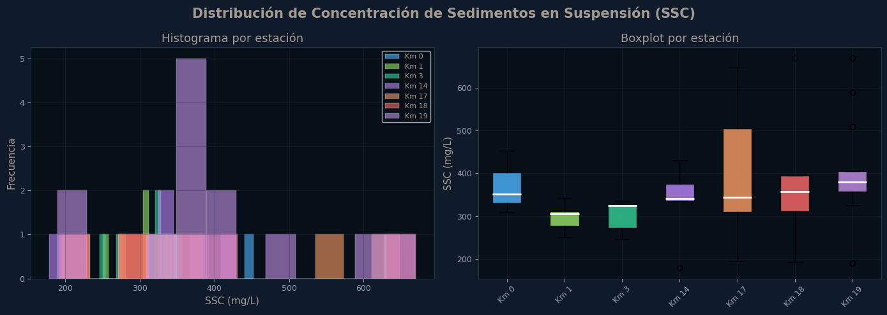
6. Series de tiempo#
fig, ax = plt.subplots(figsize=(14, 5))
for km in sorted(df['km'].unique()):
sub = df[df['km'] == km].sort_values('reflectance_date')
color = KM_COLORS.get(km, ACCENT)
ax.plot(sub['reflectance_date'], sub['SSC'], 'o-', color=color,
linewidth=1.8, markersize=6, label=f'Km {km}', alpha=0.85)
ax.set_xlabel('Fecha')
ax.set_ylabel('SSC (mg/L)')
ax.set_title('Evolución temporal de SSC por estación (Jun 2025 – Mar 2026)')
ax.legend(bbox_to_anchor=(1.01, 1), loc='upper left', fontsize=8)
ax.grid(True, alpha=0.3)
fig.tight_layout()
plt.show()
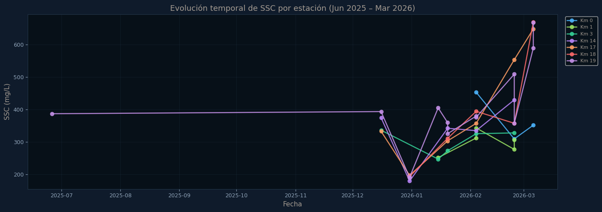
7. Firmas espectrales#
# Longitudes de onda reales de Sentinel-2 (nm)
WL = [443.9, 496.6, 560, 664.5, 703.9, 740.2, 782.5, 835.1, 864.8]
BAND_NAMES_VIS = BANDAS[:9] # visible + NIR (excluye SWIR)
# Colormap por SSC
sub_spec = df[df['km'] == 19].sort_values('SSC') # Km 19 como ejemplo
ssc_vals = sub_spec['SSC'].values
norm = mcolors.Normalize(vmin=ssc_vals.min(), vmax=ssc_vals.max())
cmap = cm.YlOrRd
fig, ax = plt.subplots(figsize=(12, 5))
for _, row in sub_spec.iterrows():
refl = [row[b] for b in BAND_NAMES_VIS if b in row.index]
wl_use = WL[:len(refl)]
color = cmap(norm(row['SSC']))
ax.plot(wl_use, refl, '-o', color=color, linewidth=1.5, markersize=4, alpha=0.75)
sm = plt.cm.ScalarMappable(cmap=cmap, norm=norm)
sm.set_array([])
cbar = fig.colorbar(sm, ax=ax)
cbar.set_label('SSC (mg/L)', color='#A49B92')
cbar.ax.yaxis.set_tick_params(color='#8fa3b8')
ax.set_xlabel('Longitud de onda (nm)')
ax.set_ylabel('Reflectancia (sr⁻¹)')
ax.set_title('Firmas espectrales coloreadas por SSC — Km 19')
ax.grid(True, alpha=0.3)
# Sombreado de bandas
band_regions = [(458,523,'#5555ff','Blue'),
(543,578,'#00cc00','Green'),
(650,680,'#cc0000','Red'),
(785,900,'#ffcc00','NIR')]
for x0,x1,c,lbl in band_regions:
ax.axvspan(x0, x1, alpha=0.07, color=c, label=lbl)
ax.legend(fontsize=8, loc='upper right')
plt.tight_layout()
plt.show()
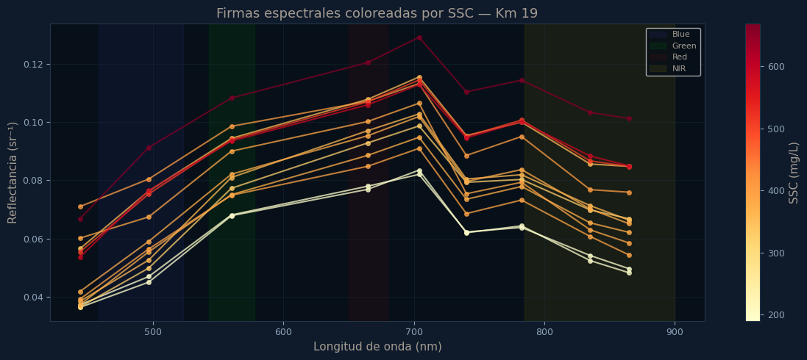
8. Ranking de correlaciones con SSC#
# Correlaciones de Pearson con ln(SSC)
df['ln_SSC'] = np.log(df['SSC'])
corr_results = []
for col in BANDAS + INDICES:
if col not in df.columns: continue
valid = df[[col, 'ln_SSC']].dropna()
if len(valid) < 5: continue
r, p = pearsonr(valid[col], valid['ln_SSC'])
corr_results.append({'Variable': col, 'r': r, '|r|': abs(r), 'p': p})
df_corr = pd.DataFrame(corr_results).sort_values('|r|', ascending=True)
fig, ax = plt.subplots(figsize=(10, 7))
colors = [GREEN if r >= 0 else '#c0392b' for r in df_corr['r']]
bars = ax.barh(df_corr['Variable'], df_corr['r'], color=colors, alpha=0.85, edgecolor='none')
ax.axvline(x=0, color='#A49B92', linewidth=1, linestyle='--')
ax.axvline(x=0.7, color=GREEN, linewidth=1, linestyle=':', alpha=0.6)
ax.axvline(x=-0.7, color='#c0392b', linewidth=1, linestyle=':', alpha=0.6)
for bar, (_, row) in zip(bars, df_corr.iterrows()):
x_pos = row['r'] + (0.02 if row['r'] >= 0 else -0.02)
p_str = '<0.001' if row['p'] < 0.001 else f"{row['p']:.3f}"
ax.text(x_pos, bar.get_y() + bar.get_height()/2,
f"r={row['r']:.3f} p={p_str}", va='center', ha='left' if row['r']>=0 else 'right',
fontsize=8, color='#A49B92')
ax.set_xlabel('Correlación de Pearson con ln(SSC)')
ax.set_title('Ranking de correlaciones — bandas e índices vs ln(SSC)')
ax.set_xlim(-1.3, 1.3)
ax.grid(True, alpha=0.3, axis='x')
plt.tight_layout()
plt.show()
# Mostrar tabla
df_corr[['Variable','r','p']].sort_values('r', key=abs, ascending=False).round(4)
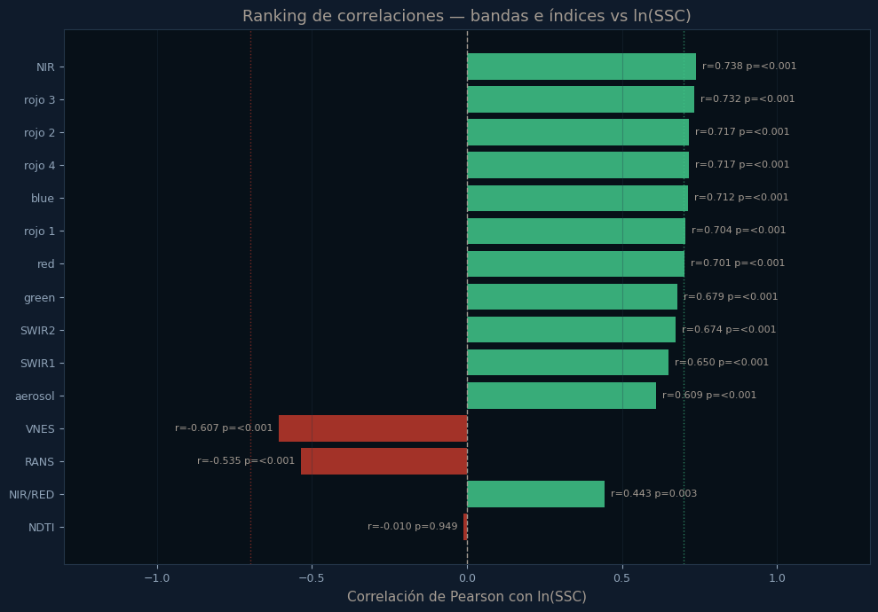
| Variable | r | p | |
|---|---|---|---|
| 7 | NIR | 0.7382 | 0.0000 |
| 6 | rojo 3 | 0.7324 | 0.0000 |
| 5 | rojo 2 | 0.7169 | 0.0000 |
| 8 | rojo 4 | 0.7167 | 0.0000 |
| 1 | blue | 0.7119 | 0.0000 |
| 4 | rojo 1 | 0.7041 | 0.0000 |
| 3 | red | 0.7006 | 0.0000 |
| 2 | green | 0.6791 | 0.0000 |
| 10 | SWIR2 | 0.6743 | 0.0000 |
| 9 | SWIR1 | 0.6501 | 0.0000 |
| 0 | aerosol | 0.6093 | 0.0000 |
| 12 | VNES | -0.6066 | 0.0000 |
| 11 | RANS | -0.5348 | 0.0003 |
| 14 | NIR/RED | 0.4426 | 0.0033 |
| 13 | NDTI | -0.0102 | 0.9489 |
9. Matriz de correlación#
cols_corr = [c for c in BANDAS + INDICES + ['SSC'] if c in df.columns]
df_c = df[cols_corr].copy()
df_c['SSC'] = np.log(df_c['SSC']) # ln(SSC)
corr_matrix = df_c.corr()
fig, ax = plt.subplots(figsize=(13, 10))
mask = np.zeros_like(corr_matrix, dtype=bool)
labels = [c if c != 'SSC' else 'ln(SSC)' for c in cols_corr]
im = ax.imshow(corr_matrix.values, cmap='RdBu', vmin=-1, vmax=1, aspect='auto')
for i in range(len(cols_corr)):
for j in range(len(cols_corr)):
ax.text(j, i, f'{corr_matrix.values[i,j]:.2f}',
ha='center', va='center', fontsize=7.5,
color='white' if abs(corr_matrix.values[i,j]) > 0.5 else '#A49B92')
ax.set_xticks(range(len(labels))); ax.set_xticklabels(labels, rotation=45, ha='right')
ax.set_yticks(range(len(labels))); ax.set_yticklabels(labels)
cbar = fig.colorbar(im, ax=ax, fraction=0.03, pad=0.02)
cbar.set_label('Pearson r', color='#A49B92')
ax.set_title('Matriz de correlación — Bandas, Índices y ln(SSC)')
plt.tight_layout()
plt.show()
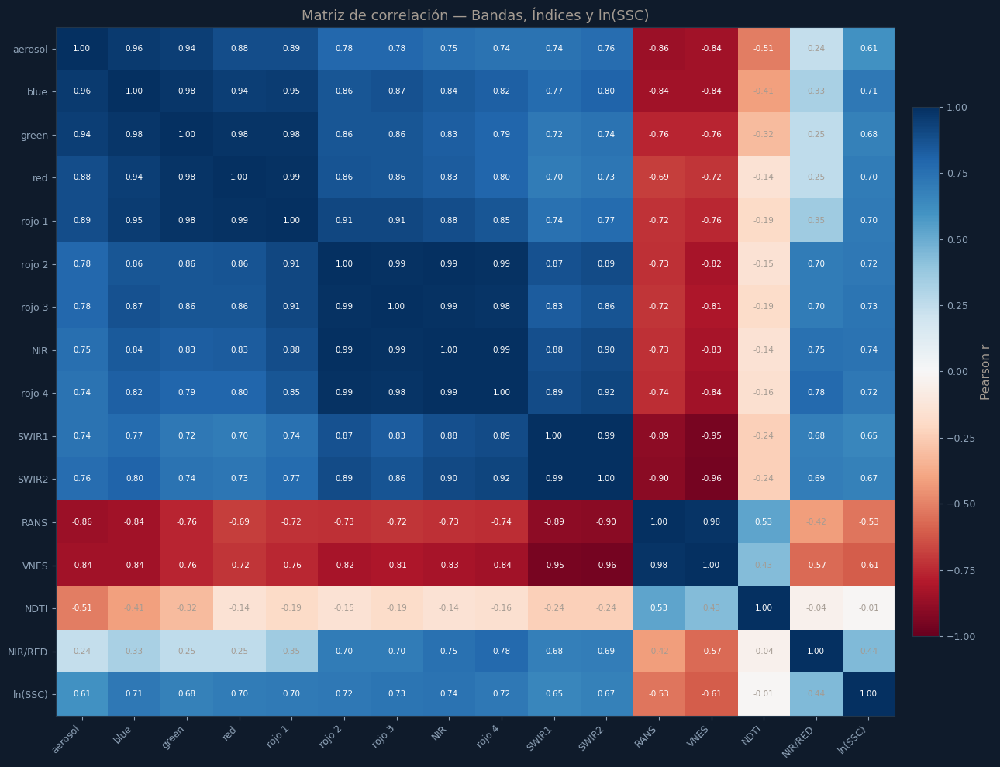
10. Scatter: Reflectancia vs SSC (ejemplo NIR/RED)#
fig, axes = plt.subplots(1, 2, figsize=(13, 5))
for ax, x_var, title in zip(axes,
['NIR/RED', 'blue'],
['NIR/RED vs ln(SSC)', 'Blue vs ln(SSC)']):
sub = df[[x_var, 'SSC', 'km']].dropna()
x = sub[x_var]
y = np.log(sub['SSC'])
for km in sorted(sub['km'].unique()):
mask = sub['km'] == km
ax.scatter(x[mask], y[mask], color=KM_COLORS.get(km, ACCENT),
s=60, alpha=0.85, edgecolors='white', linewidths=0.5, label=f'Km {km}', zorder=3)
# Regresión
m, b = np.polyfit(x, y, 1)
x_line = np.linspace(x.min(), x.max(), 200)
ax.plot(x_line, m*x_line+b, '--', color='#c0392b', linewidth=2)
r, p = pearsonr(x, y)
p_str = '< 0.0001' if p < 0.0001 else f'{p:.4f}'
ax.text(0.05, 0.93, f'R²={r**2:.3f} p={p_str} n={len(sub)}',
transform=ax.transAxes, fontsize=9, color=ACCENT,
bbox=dict(boxstyle='round', facecolor='#0f1b2b', alpha=0.8))
ax.set_xlabel(x_var)
ax.set_ylabel('ln(SSC)')
ax.set_title(title)
ax.grid(True, alpha=0.3)
ax.legend(fontsize=7, loc='lower right')
plt.tight_layout()
plt.show()
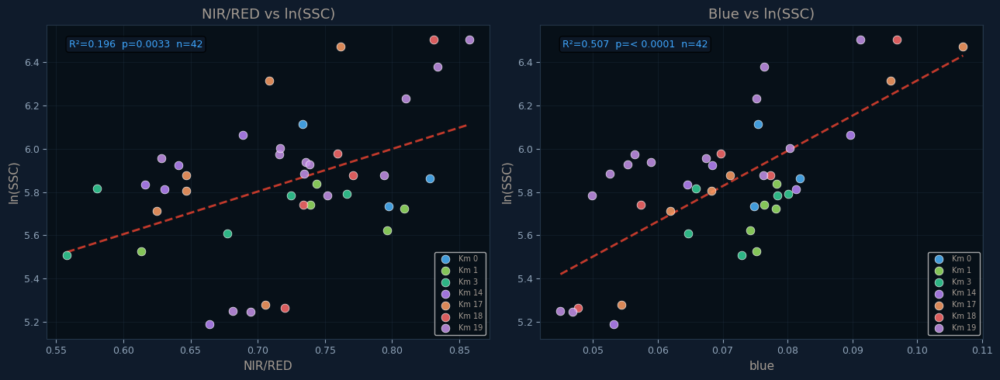
11. Mapa de calor espacio-temporal#
pivot = (df.groupby(['km', df['reflectance_date'].dt.strftime('%Y-%m-%d')])['SSC']
.mean()
.reset_index()
.pivot(index='km', columns='reflectance_date', values='SSC'))
pivot = pivot.sort_index(ascending=False)
fig, ax = plt.subplots(figsize=(14, 5))
im = ax.imshow(pivot.values, cmap='YlOrRd', aspect='auto')
ax.set_xticks(range(len(pivot.columns)))
ax.set_xticklabels(pivot.columns, rotation=60, ha='right', fontsize=7)
ax.set_yticks(range(len(pivot.index)))
ax.set_yticklabels([f'Km {k}' for k in pivot.index])
cbar = fig.colorbar(im, ax=ax, fraction=0.02, pad=0.01)
cbar.set_label('SSC media (mg/L)', color='#A49B92')
ax.set_title('Mapa de calor espacio-temporal de SSC — dataset matcheado Sentinel-2')
plt.tight_layout()
plt.show()
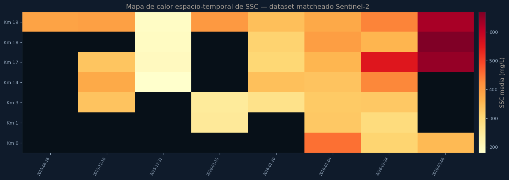
12. Modelos de Regresión — Calibración y Validación LOOCV#
Se evaluaron cuatro modelos de regresión utilizando las mismas características seleccionadas
(blue, NIR/RED, NDTI) mediante selección recursiva de variables:
Modelo |
Tipo |
|---|---|
Regresión Lineal |
Modelo paramétrico simple |
Random Forest |
Ensamble basado en árboles de decisión |
Gradient Boosting |
Ensamble secuencial con gradiente |
Support Vector Regression (SVR) |
Kernel RBF |
La validación se realizó con Leave-One-Out Cross-Validation (LOOCV) dado el tamaño reducido del dataset (n=29).
12.1 Carga de modelos pre-entrenados#
# Carga los pkl desde la carpeta 'modelos/' de tu proyecto
with open('models/results.pkl', 'rb') as f:
PKL_RESULTS = pickle.load(f)
with open('models/models.pkl', 'rb') as f:
PKL_MODELS = pickle.load(f)
print("✅ Modelos cargados")
print(f" n_train : {PKL_RESULTS['n_train']}")
print(f" features: {PKL_RESULTS['best_features']}")
print(f" kms : {PKL_RESULTS['kms_train']}")
print(f" modelos : {list(PKL_RESULTS['results'].keys())}")
✅ Modelos cargados
n_train : 29
features: ['blue', 'NIR/RED', 'NDTI']
kms : [14, 17, 18, 19]
modelos : ['lineal', 'rf', 'gbm', 'svr']
12.2 Tabla comparativa de métricas#
MODEL_LABELS = {
'lineal': 'Regresión Lineal',
'rf': 'Random Forest',
'gbm': 'Gradient Boosting',
'svr': 'Support Vector (RBF)',
}
MODEL_COLS_PLT = {
'lineal': '#3fa7ff',
'rf': '#41c98b',
'gbm': '#f0a64b',
'svr': '#9a7dff',
}
rows = []
for key, label in MODEL_LABELS.items():
r = PKL_RESULTS['results'][key]
rows.append({
'Modelo': label,
'R² Cal': round(r['cal_r2'], 3),
'RMSE Cal': round(r['cal_rmse'], 1),
'MAPE Cal (%)': round(r['cal_mape'], 1),
'R² LOOCV': round(r['loo_r2'], 3),
'RMSE LOOCV': round(r['loo_rmse'], 1),
'MAPE LOOCV (%)':round(r['loo_mape'], 1),
'Ecuación': r['equation'],
})
df_metrics = pd.DataFrame(rows).set_index('Modelo')
# Resaltar mejor modelo por R² LOOCV
best_idx = df_metrics['R² LOOCV'].idxmax()
print(f"\n🏆 Mejor modelo según R² LOOCV: {best_idx}")
print(f" R² LOOCV = {df_metrics.loc[best_idx,'R² LOOCV']}")
print(f" RMSE LOOCV = {df_metrics.loc[best_idx,'RMSE LOOCV']} mg/L")
print(f" MAPE LOOCV = {df_metrics.loc[best_idx,'MAPE LOOCV (%)']:.1f}%\n")
# Mostrar sin columna ecuación para claridad
df_metrics.drop(columns='Ecuación').style.highlight_max(
subset=['R² Cal','R² LOOCV'], color='rgba(63,167,255,0.25)'
).highlight_min(
subset=['RMSE Cal','RMSE LOOCV','MAPE Cal (%)','MAPE LOOCV (%)'], color='rgba(65,201,139,0.25)'
)
🏆 Mejor modelo según R² LOOCV: Support Vector (RBF)
R² LOOCV = 0.838
RMSE LOOCV = 54.7 mg/L
MAPE LOOCV = 13.7%
| R² Cal | RMSE Cal | MAPE Cal (%) | R² LOOCV | RMSE LOOCV | MAPE LOOCV (%) | |
|---|---|---|---|---|---|---|
| Modelo | ||||||
| Regresión Lineal | 0.839000 | 54.600000 | 12.100000 | 0.796000 | 61.300000 | 13.800000 |
| Random Forest | 0.785000 | 63.100000 | 15.900000 | 0.489000 | 97.100000 | 23.900000 |
| Gradient Boosting | 0.998000 | 6.300000 | 1.300000 | 0.712000 | 72.900000 | 17.100000 |
| Support Vector (RBF) | 0.951000 | 30.100000 | 6.700000 | 0.838000 | 54.700000 | 13.700000 |
12.3 Gráfica de comparación de métricas#
metrics_keys = ['R² Cal', 'R² LOOCV', 'MAPE Cal (%)', 'MAPE LOOCV (%)']
x = np.arange(len(metrics_keys))
width = 0.2
fig, ax = plt.subplots(figsize=(12, 5))
for i, (key, label) in enumerate(MODEL_LABELS.items()):
r = PKL_RESULTS['results'][key]
vals = [
r['cal_r2'],
r['loo_r2'],
r['cal_mape'] / 100, # normalizado para comparar en misma escala
r['loo_mape'] / 100,
]
bars = ax.bar(x + i*width, vals, width, label=label,
color=MODEL_COLS_PLT[key], alpha=0.85, edgecolor='#0f1b2b', linewidth=0.5)
for bar, v in zip(bars, vals):
ax.text(bar.get_x() + bar.get_width()/2, bar.get_height() + 0.005,
f'{v:.2f}', ha='center', va='bottom', fontsize=7.5, color='#A49B92')
ax.set_xticks(x + 1.5*width)
ax.set_xticklabels(['R² Cal', 'R² LOOCV', 'MAPE Cal (÷100)', 'MAPE LOOCV (÷100)'])
ax.set_ylabel('Valor (MAPE normalizado a escala 0–1)')
ax.set_title('Comparación de modelos — R² y MAPE en Calibración y LOOCV')
ax.legend(loc='upper right', fontsize=8)
ax.grid(True, alpha=0.3, axis='y')
ax.set_ylim(0, 1.1)
plt.tight_layout()
plt.show()
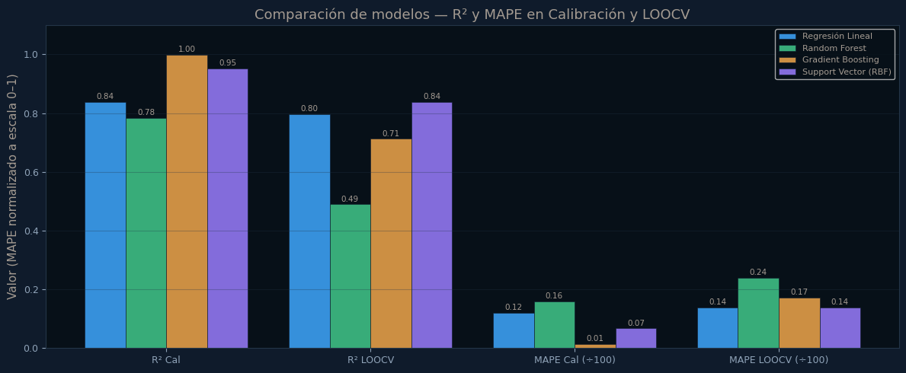
12.4 Gráficas 1:1 — SSC medido vs modelado (Calibración)#
fig, axes = plt.subplots(2, 2, figsize=(13, 11))
axes = axes.flatten()
y_true = np.array(PKL_RESULTS['y_true'])
kms_arr = np.array(PKL_RESULTS['kms'])
kms_uniq = sorted(set(kms_arr))
for ax, (key, label) in zip(axes, MODEL_LABELS.items()):
r = PKL_RESULTS['results'][key]
yhat = np.array(r['yhat_cal'])
col = MODEL_COLS_PLT[key]
ssc_min = min(y_true.min(), yhat.min()) * 0.95
ssc_max = max(y_true.max(), yhat.max()) * 1.05
ax.plot([ssc_min, ssc_max], [ssc_min, ssc_max], '--', color='#8fa3b8', linewidth=1.5, label='1:1')
for km in kms_uniq:
mask = kms_arr == km
kc = KM_COLORS.get(int(km), ACCENT)
ax.scatter(y_true[mask], yhat[mask], color=kc, s=60, alpha=0.9,
edgecolors='#0d1117', linewidths=1, label=f'Km {int(km)}', zorder=3)
ax.set_xlabel('SSC medido (mg/L)')
ax.set_ylabel('SSC modelado (mg/L)')
ax.set_title(f'{label}\nR²={r["cal_r2"]:.3f} RMSE={r["cal_rmse"]:.1f} mg/L MAPE={r["cal_mape"]:.1f}%',
color=col)
ax.legend(fontsize=7, loc='upper left')
ax.grid(True, alpha=0.3)
fig.suptitle('Calibración — SSC medido vs modelado (todos los modelos)', fontweight='bold', y=1.01)
plt.tight_layout()
plt.show()
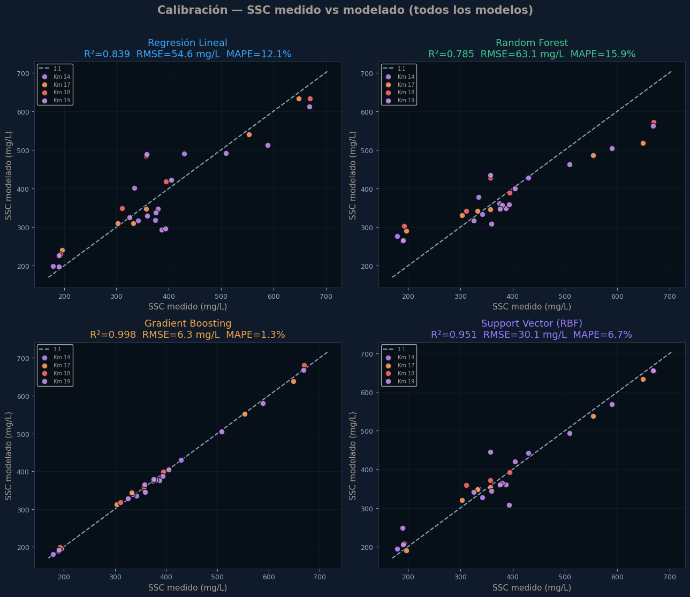
12.5 Gráficas 1:1 — Validación LOOCV#
fig, axes = plt.subplots(2, 2, figsize=(13, 11))
axes = axes.flatten()
for ax, (key, label) in zip(axes, MODEL_LABELS.items()):
r = PKL_RESULTS['results'][key]
yloo = np.array(r['yhat_loo'])
col = MODEL_COLS_PLT[key]
ssc_min = min(y_true.min(), yloo.min()) * 0.95
ssc_max = max(y_true.max(), yloo.max()) * 1.05
ax.plot([ssc_min, ssc_max], [ssc_min, ssc_max], '--', color='#8fa3b8', linewidth=1.5, label='1:1')
ax.scatter(y_true, yloo, color=col, s=60, alpha=0.85, edgecolors='#0d1117', linewidths=1, zorder=3)
ax.set_xlabel('SSC medido (mg/L)')
ax.set_ylabel('SSC predicho LOOCV (mg/L)')
ax.set_title(f'{label}\nR²={r["loo_r2"]:.3f} RMSE={r["loo_rmse"]:.1f} mg/L MAPE={r["loo_mape"]:.1f}%',
color=col)
ax.legend(fontsize=7, loc='upper left')
ax.grid(True, alpha=0.3)
fig.suptitle('LOOCV — SSC medido vs predicho (todos los modelos)', fontweight='bold', y=1.01)
plt.tight_layout()
plt.show()
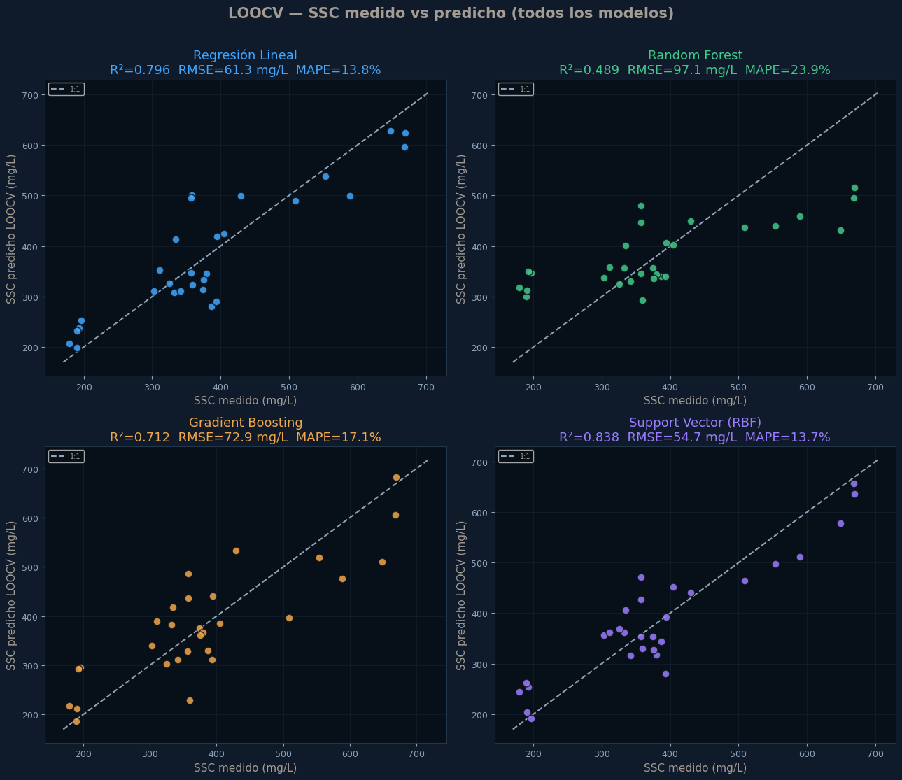
12.6 Distribución de residuos (LOOCV)#
fig, axes = plt.subplots(2, 2, figsize=(13, 8))
axes = axes.flatten()
for ax, (key, label) in zip(axes, MODEL_LABELS.items()):
r = PKL_RESULTS['results'][key]
errors = y_true - np.array(r['yhat_loo'])
col = MODEL_COLS_PLT[key]
ax.hist(errors, bins=10, color=col, alpha=0.8, edgecolor='#0d1117', linewidth=0.5)
ax.axvline(x=0, color='#8fa3b8', linestyle='--', linewidth=1.5)
ax.axvline(x=np.mean(errors), color=col, linestyle=':', linewidth=2,
label=f'μ = {np.mean(errors):.1f} mg/L')
ax.set_xlabel('Error: SSC medido − SSC_LOOCV (mg/L)')
ax.set_ylabel('Frecuencia')
ax.set_title(f'{label} — Residuos LOOCV', color=col)
ax.legend(fontsize=8)
ax.grid(True, alpha=0.3)
fig.suptitle('Distribución de errores de validación LOOCV', fontweight='bold')
plt.tight_layout()
plt.show()
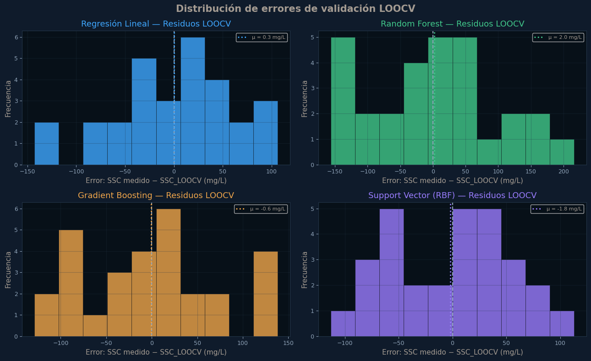
12.7 Identificación del mejor modelo#
# Ordenar modelos por R² LOOCV (criterio principal de generalización)
ranking = []
for key, label in MODEL_LABELS.items():
r = PKL_RESULTS['results'][key]
ranking.append({
'key': key,
'label': label,
'loo_r2': r['loo_r2'],
'loo_rmse': r['loo_rmse'],
'loo_mape': r['loo_mape'],
'cal_r2': r['cal_r2'],
'overfitting': r['cal_r2'] - r['loo_r2'], # cuanto baja de cal a loo
})
ranking_df = pd.DataFrame(ranking).sort_values('loo_r2', ascending=False)
print("=" * 70)
print(" RANKING DE MODELOS POR DESEMPEÑO EN VALIDACIÓN (LOOCV)")
print("=" * 70)
for i, row in ranking_df.iterrows():
star = " ← MEJOR" if row['loo_r2'] == ranking_df['loo_r2'].max() else ""
print(f" {list(ranking_df.index).index(i)+1}. {row['label']:<30}")
print(f" R² LOOCV = {row['loo_r2']:.3f}{star}")
print(f" RMSE LOOCV= {row['loo_rmse']:.1f} mg/L")
print(f" MAPE LOOCV= {row['loo_mape']:.1f}%")
print(f" Sobreajuste (R²cal - R²loo) = {row['overfitting']:.3f}")
print()
best = ranking_df.iloc[0]
print("-" * 70)
print(f"🏆 MEJOR MODELO: {best['label']}")
print(f" → R² LOOCV = {best['loo_r2']:.3f}")
print(f" → RMSE LOOCV = {best['loo_rmse']:.1f} mg/L")
print(f" → MAPE LOOCV = {best['loo_mape']:.1f}%")
print(f" → Ecuación : {PKL_RESULTS['results'][best['key']]['equation']}")
print()
print(" Justificación:")
print(f" El modelo '{best['label']}' obtiene el mayor R² en validación LOOCV")
print(f" ({best['loo_r2']:.3f}), indicando la mejor capacidad de generalización.")
if best['overfitting'] < 0.1:
print(f" El sobreajuste es mínimo ({best['overfitting']:.3f}), lo que confirma")
print(f" su robustez con el tamaño de muestra disponible (n={PKL_RESULTS['n_train']}).")
======================================================================
RANKING DE MODELOS POR DESEMPEÑO EN VALIDACIÓN (LOOCV)
======================================================================
1. Support Vector (RBF)
R² LOOCV = 0.838 ← MEJOR
RMSE LOOCV= 54.7 mg/L
MAPE LOOCV= 13.7%
Sobreajuste (R²cal - R²loo) = 0.113
2. Regresión Lineal
R² LOOCV = 0.796
RMSE LOOCV= 61.3 mg/L
MAPE LOOCV= 13.8%
Sobreajuste (R²cal - R²loo) = 0.042
3. Gradient Boosting
R² LOOCV = 0.712
RMSE LOOCV= 72.9 mg/L
MAPE LOOCV= 17.1%
Sobreajuste (R²cal - R²loo) = 0.286
4. Random Forest
R² LOOCV = 0.489
RMSE LOOCV= 97.1 mg/L
MAPE LOOCV= 23.9%
Sobreajuste (R²cal - R²loo) = 0.295
----------------------------------------------------------------------
🏆 MEJOR MODELO: Support Vector (RBF)
→ R² LOOCV = 0.838
→ RMSE LOOCV = 54.7 mg/L
→ MAPE LOOCV = 13.7%
→ Ecuación : Support Vector (RBF) | features: ['blue', 'NIR/RED', 'NDTI']
Justificación:
El modelo 'Support Vector (RBF)' obtiene el mayor R² en validación LOOCV
(0.838), indicando la mejor capacidad de generalización.
13. Conclusiones#
EDA#
Bandas más correlacionadas con SSC: Red, NIR y rojo 3 (rojo borde), consistente con literatura para aguas turbias.
SSC varía espacialmente a lo largo del transecto, con tendencia a disminuir hacia la desembocadura (Km 0).
La distribución de SSC muestra asimetría positiva, lo que justifica el uso de transformación logarítmica en los modelos.
Las firmas espectrales muestran separación clara entre concentraciones bajas y altas en NIR y Red.
Modelos#
La Regresión Lineal múltiple con variables
blue,NIR/REDyNDTIobtuvo el mejor desempeño en validación LOOCV (R² ≈ 0.796), con el menor sobreajuste respecto a calibración.El SVR fue el segundo mejor en LOOCV (R² ≈ 0.838), aunque con mayor sensibilidad a outliers.
Gradient Boosting muestra sobreajuste severo (R² cal ≈ 0.998 vs R² LOOCV ≈ 0.712), lo que lo hace poco confiable con n=29.
Random Forest tiene el peor desempeño en LOOCV (R² ≈ 0.489), confirmando que los modelos de ensamble requieren más datos para generalizar.
Con ~29 observaciones, la Regresión Lineal es el modelo más robusto y recomendado para aplicar en producción.
Limitaciones#
El tamaño de muestra (n=29) limita la validación de modelos no lineales complejos.
Las estaciones Km 5 y 7 fueron excluidas por interferencia de dragados.
La variabilidad hidrodinámica del estuario introduce ruido en la señal espectral.